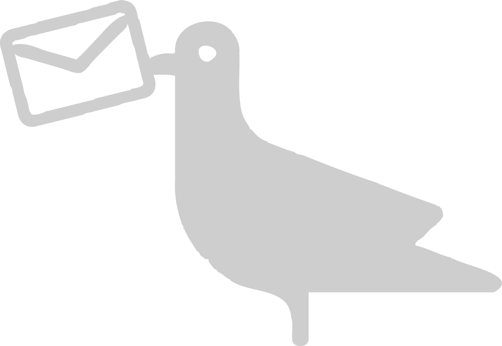
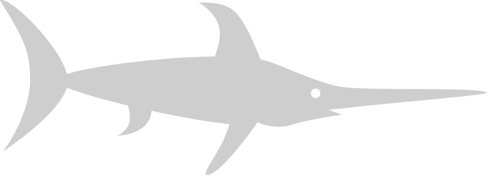

<ion-side-menus enable-menu-with-back-views="false">
  <ion-side-menu-content>
    <ion-nav-bar class="bar-calm">
      <ion-nav-back-button></ion-nav-back-button>
      <ion-nav-buttons side="left">
        <button class="button button-icon button-clear ion-navicon" menu-toggle="left"></button>
      </ion-nav-buttons>
    </ion-nav-bar>
    <ion-nav-view name="side-menu"></ion-nav-view>
  </ion-side-menu-content>
  <ion-side-menu side="left" id="side-menu" style="background-color:Default;">
    <ion-header-bar class="bar-positive" id="menu-list-header">
      <h1 class="title"> Overview</h1>
    </ion-header-bar>
    <ion-content>
      <ion-list>
        <ion-item class="item-icon-left" id="menu-list-item1" ui-sref="menu.news" menu-close="">
          Nieuws</ion-item>
        <ion-item class="item-icon-left" id="menu-list-item3" ui-sref="menu.venueRoute" menu-close="">
          Vertrek en aankomst</ion-item>
        <ion-item class="item-icon-left" id="menu-list-item5" ui-sref="menu.dresscode" menu-close="">
          Dresscode</ion-item>
        <ion-item class="item-icon-left" id="menu-list-item11" ui-sref="menu.bulletin" menu-close="">
          Prikbord</ion-item>
        <!--<ion-item class="item-icon-left" id="menu-list-item8" ui-sref="menu.fun" menu-close="">Fun!</ion-item>-->
        <ion-item class="item-icon-left" id="menu-list-item2" ui-sref="menu.contact" menu-close="">
          Contact</ion-item>
        <ion-item class="item-icon-left" id="menu-list-item12" ng-click="signOut ()">
          Logout</ion-item>
      </ion-list>
    </ion-content>
  </ion-side-menu>
</ion-side-menus>
